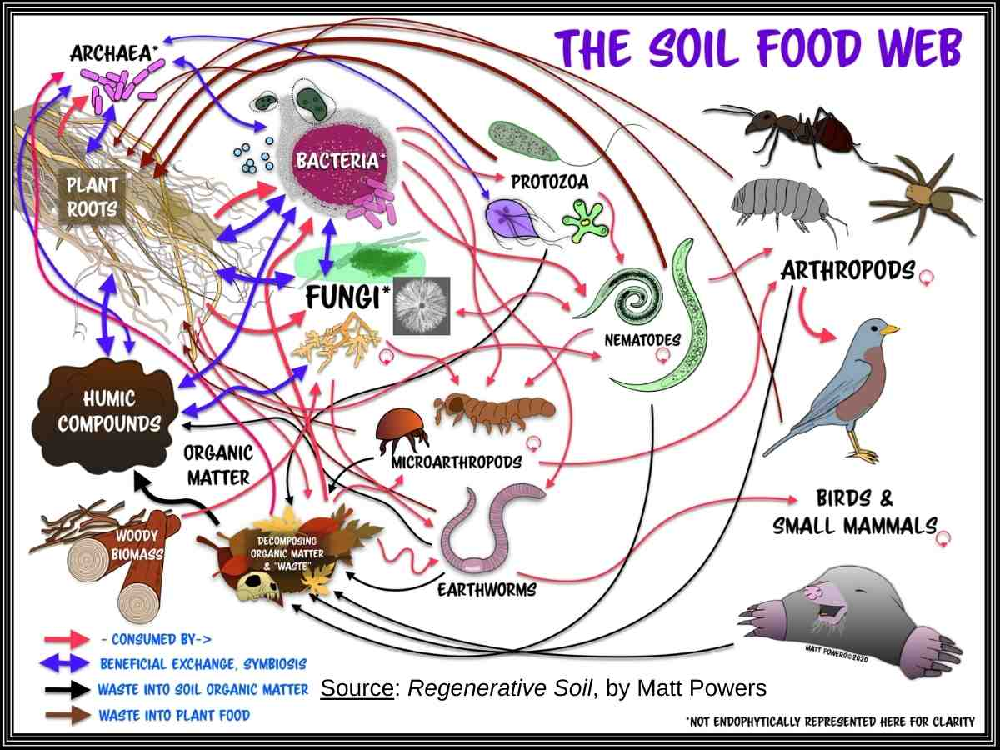

How & Why to Create Healthy Soil

Date: Friday, May 29 — 3:00–4:30 PM (Eastern Time)
Many of the world’s environmental challenges could be addressed simply by rebuilding healthy soil. Healthy soil functions like a sponge, absorbing rainfall and holding water in the ground where plants and ecosystems can use it. When soil holds water effectively, landscapes experience less flooding, less drought, and greater ecological stability.
Healthy soil also supports productive agriculture. When soil biology is functioning properly, plants receive nutrients naturally from the soil food web. Crops become more resilient, irrigation needs decline, and farmers can often reduce costly inputs.
In this webinar we explore how soil actually works, how conventional agriculture damages soil systems, and how regenerative practices can restore soil health while improving food production.
What You Will Learn
- The five principles of soil health
- How the soil food web delivers nutrients to plants
- How carbon-rich soil stores large amounts of water
- How healthy soil reduces irrigation needs
- How regenerative agriculture rebuilds soil fertility
- How healthy soil prevents both flooding and drought
- How healthy soil produces resilient plants and nutritious food
Why This Topic Matters
Soil degradation threatens food production, water security, and climate stability. Conventional agricultural practices often destroy soil structure and biological life, leading to erosion, water runoff, and declining fertility.
By applying the principles of soil health, farmers and gardeners can rebuild soil organic matter, increase water storage, improve plant nutrition, and restore productive ecosystems.
Healthy soil supports stronger photosynthesis, drawing carbon from the atmosphere and storing it in the soil while improving agricultural productivity.
Who Should Attend
Gardeners, farmers, landowners, and anyone interested in food systems, water cycles, climate resilience, or regenerative agriculture.
Recording
A recording will be available to everyone who registers.